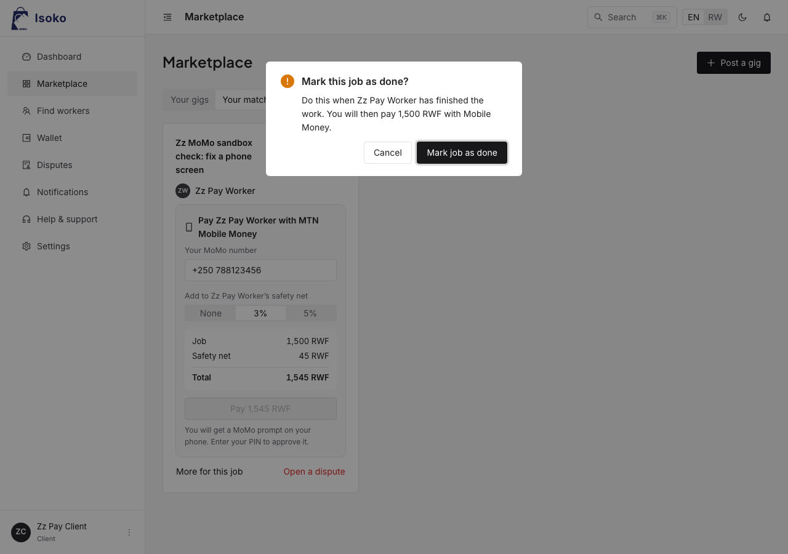
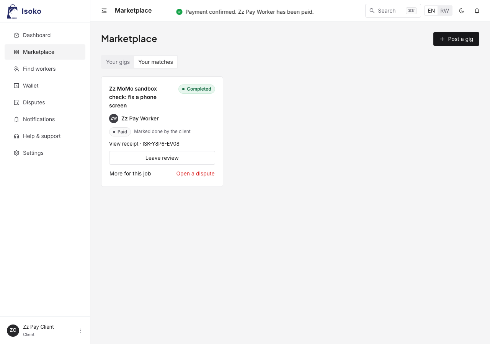
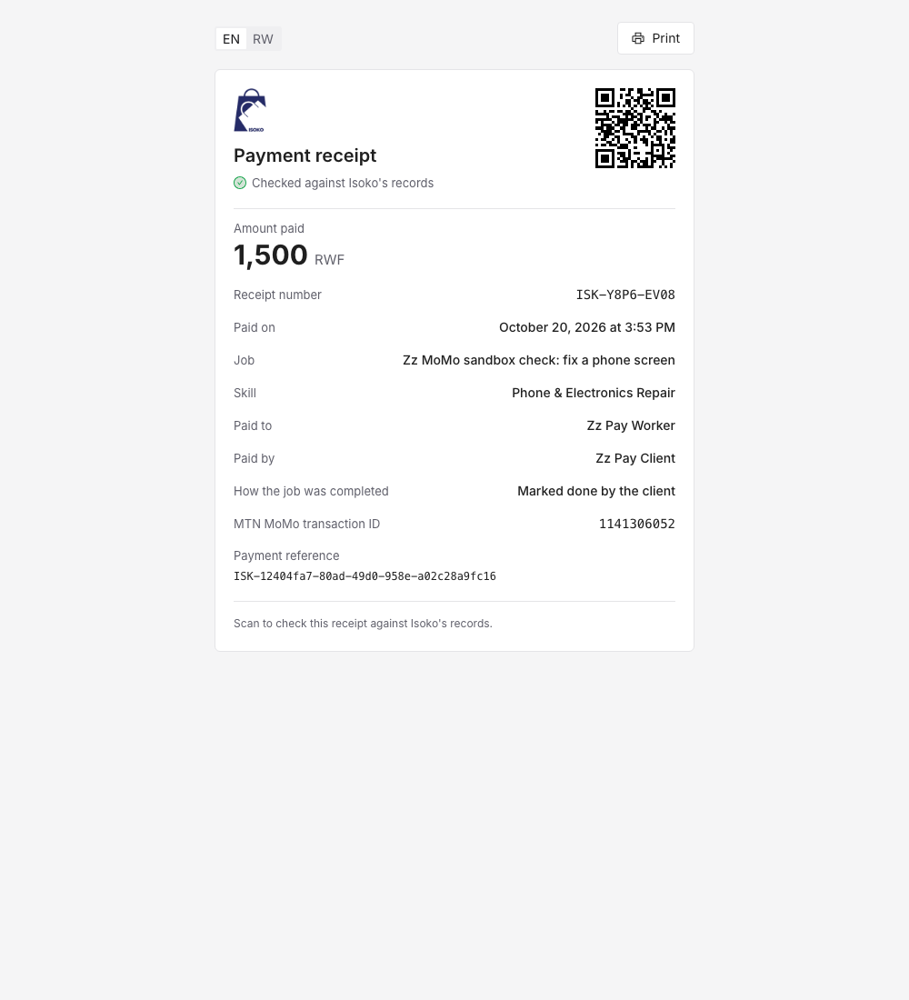

Isoko lets young workers in Kigali prove a practical skill and earn from it. A worker submits evidence of a skill. A peer reviewer, drawn at random and unrelated to the worker, checks it. Clients post jobs and receive candidates ranked by distance, trust and skill fit, each with its reasons. The client pays through MTN Mobile Money, and the payment produces a public receipt. This report compares the product with the approved proposal (FR-1 to FR-14, NFR-1 to NFR-8, RQ1 to RQ3). It then describes how the product works, how it was tested, and the engineering practices behind it.
| Planned feature | Intended purpose | Status | Evidence (repository paths; screenshots in docs/evidence/) |
|---|---|---|---|
| FR-1 Register and sign in, JWT session | Secure access for every role | Completed | Email and password (bcrypt), plus Google sign-in; authController.ts, middleware/auth; e2e auth.spec.ts |
| FR-2 Role and language on profile | Serve workers, clients, reviewers and admins in their language | Completed (changed) | Roles worker, client and admin. The mentor became a peer-reviewer tier on a verified worker's account (reviewerTier); see the changes below. EN/RW per user, with CI parity check scripts/check-i18n-parity.mjs |
| FR-3 Experience, CV, certificates | Supporting evidence beyond the platform's own checks | Completed | Profile settings; uploads checked by content (magic bytes); userController.ts, avatar.test.ts |
| FR-4 Category-specific skill task with evidence | A credible, task-specific signal of skill | Completed | Photos, files, links and notes per skill; skillTaskController.ts, skillEvidence.test.ts |
| FR-5 Automatic reviewer assignment; the worker cannot choose | Stop collusion between worker and reviewer | Completed | Seeded, auditable draw that excludes related reviewers, plus recusal; skillVerificationService.ts, reviewerRecusal.test.ts |
| FR-6 Reviewer rates the task; trust score updates | Turn a review into a verified, scored skill | Completed | Decision, confidence (1–5), proficiency level and notes; trust recalculated; reviewer queue at /reviews |
| FR-7 Client posts a gig | Demand side of the marketplace | Completed | Title, description, budget, skill, map location and photos; admin approval first; rate guidance; e2e rules-and-layout.spec.ts |
| FR-8 Rank workers by distance and trust | Fair, useful matches (RQ2) | Completed | Weighted score over distance, trust, skill fit and availability, with reasons; matchScoringService.ts, rankedMatching.test.ts |
| FR-9 Update match status | Track a job to completion | Completed | Lifecycle from confirm to "I've finished", done, paid, cancelled and disputed; completionService.ts, jobFlow.test.ts |
| FR-10 Real payment request via MTN MoMo or Airtel Money; status from callback | Real, traceable payment instead of cash | Partial | MTN: completed against MTN's real sandbox. Callback is supported and status polling is the fallback; mtnMomoAdapter.ts, momoPayments.test.ts, docs/evidence/momo/ (Fig. 1). Airtel: not implemented (justified below) |
| FR-11 Both parties rate each other | Reputation built from real jobs | Completed | Allowed only after a confirmed payment; updates trust; reviewController.ts, trust.test.ts |
| FR-12 Messaging between worker and mentor | Keep a human relationship beside the score | Not implemented (justified) | Messaging is live between worker and client and with admins, with photos and voice notes (Socket.IO); messageController.ts. A reviewer–worker channel was left out on purpose (below) |
| FR-13 In-app notices; SMS and email by opt-in | Reach users without the app open | Completed | In-app by default; SMS (Pindo) after phone confirmation; email (Brevo); channels chosen per category; lib/notify.ts, notifySms.test.ts, notifyEmail.test.ts |
| FR-14 Admin moderation | Keep the marketplace safe and fair | Completed | Gig approvals, users, reports, disputes, safety (SOS), collusion report, audit log; adminController.ts |
| NFR-1 Mobile-responsive and bilingual | Usable on phones, in Kinyarwanda | Partial | The interface is fully EN/RW, with e2e checks at phone widths. Notices sent by the server (SMS, email, in-app text) are still English |
| NFR-2 Standard endpoints within 500 ms | Responsive on slow networks | Completed | p95 at most 156 ms locally at 25 concurrent requests; docs/evidence/perf/ (section 4) |
| NFR-3 bcrypt, JWT on protected routes, keys in env | Security | Completed | Plus helmet, CORS allow-list, rate limits and signed expiring links for private files; security.test.ts; .env git-ignored |
| NFR-4 Idempotent payment callbacks | No double payment or double update | Completed | webhookIdempotency.test.ts, paymentService.ts |
| NFR-5 CI runs tests before any build | Reliability | Completed | .github/workflows/ci.yml: tests, then e2e, then the production image (built only after the server job passes) |
| NFR-6 Layered architecture | Maintainable, testable parts | Completed | Routes, then middleware, controllers, services and models (section 5). Two controllers are still large (see limitations) |
| NFR-7 Rwanda Law 058/2021 | Lawful handling of personal data | Completed | Public /privacy page (EN/RW), data export, account deletion by anonymisation; accountDeletion.test.ts, dataExport.test.ts |
| NFR-8 Provider reference on every transaction | Payments verifiable against MTN | Completed | MTN reference and financial transaction id stored and shown on the receipt (Fig. 1) |
| RQ1 instrument: assignment audit, confidence ratings | Evidence that verification resists collusion | Completed | Every draw is logged with its seed and exclusions; collusion report (z-scores, rubber-stamping, pairings, recusals); collusionDetectionService.ts |
| RQ2 instrument: outcomes by score band | Evidence on weighting distance against trust | Completed | Pilot metrics page; randomised study arms (allocationService.ts); weight profiles stored as data |
| RQ3 instrument: paired client survey | Effect of verification on willingness to hire | Not implemented in app | To be run as a paired survey alongside the pilot |
| Pilot, 25–30 people, Kimironko and Nyamirambo | Answer RQ1–RQ3 with real users | Next phase | The product is deployed and ready. The pilot follows this submission |
PaymentAdapter interface, so Airtel is one additional class.Architecture. The web app is a React 18 + TypeScript single-page app (Vite, Ant Design, Redux Toolkit, react-i18next), installable as a PWA. It talks to an Express 5 + TypeScript API over JSON and Socket.IO, which carries live messages and notices. The API stores data in PostgreSQL through Sequelize: 32 models and 72 migrations. A background sweep every 10 minutes re-checks unconfirmed payments with MTN, escalates overdue disputes, follows up safe visits and unanswered applications, reminds clients to mark finished work done, and closes resolved support requests. Deployment: the web app is a Render static site. The API runs on Render as a Docker web service in Frankfurt, built from Dockerfile.prod; on start it migrates and seeds an empty database. The database and private file storage are on Supabase (eu-central-1).
The core flow, front end to back end:
Data handling and logic. Each step is enforced on the server, not only hidden in the interface:
applicationEligibility.ts refuses an application that breaks a rule. A gig is sensitive when it involves children or work inside a home; for those it requires a reviewed skill in the trade, a confirmed phone and a record of past work.INVALID_CURRENCY, which is shown to the client and lets them retry.


Fig. 1: a real payment through MTN's MoMo sandbox (20 Oct 2026). The adapter smoke test confirmed a request in 2.5 s and reproduced the failure path (docs/evidence/momo/README.md).
| Approach | Why it was chosen | How it was done | Results, and what changed because of it |
|---|---|---|---|
| Unit (Jest, Vitest) | The algorithms decide who is invited and who is trusted. Their edge cases must be pinned exactly | 155 server tests: scoring and haversine, trust shrinkage and decay, the reviewer draw, collusion thresholds, rates, the PDF writer, the drivers. 23 client tests: job stages and next actions, the offline queue | All pass. They pin the cases that matter: one 5-star review must not outrank a long 4.8 record, a past collaborator is never drawn as reviewer, and no flag is raised on fewer than 5 reviews |
| Integration (Jest + Supertest, real PostgreSQL) | Most rules live at the boundary between route, middleware and database: roles, eligibility, payments, idempotency | 440 tests in 45 files, run against a migrated test database on every push. MTN's API is mocked, and drivers are pinned to log so tests never send anything | 594 of 595 pass; one sign-up test fails intermittently (about 1 in 10 runs; CI now records its message). Each rule added during the final phase came with its tests: admin–client messaging, reviews only after payment, recusal and reassignment, and no account deletion while money is owed |
| End-to-end and compatibility (Playwright) | Only a real browser shows whether two people can complete a job through the actual screens, on a phone as well as a desktop | The production build against the real API and a fresh database. 16 tests, including the whole job journey run as two people at once, a sensitive-gig refusal, form validation, the language choice, and six pages checked for sideways overflow | 64 of 64 across 4 browser set-ups (table below). Found two real bugs, both fixed: a wrong password showed its error twice, and on an iPhone-sized screen the Marketplace tabs were 22 px too wide, pushing the page sideways |
| Performance (Node + Playwright/CDP scripts) | Users are on low-end Android phones and metered mobile data; NFR-2 sets a 500 ms target | API latency at 1, 10 and 25 concurrent requests, locally and live. Cold page loads on desktop and on a throttled low-end phone (4× slower CPU, 1.6 Mb/s, 150 ms round trip), median of 3 loads | The first download was 1,111 KB compressed, in one file. It is now 558 KB, after splitting pages to load on demand, splitting out third-party libraries and adding gzip (section 4) |
| Measure | Before | After |
|---|---|---|
| JavaScript for the first page (compressed) | 1,111 KB | 558 KB (−50%) |
| Low-end phone, first paint, sign-in | 6.6 s | 3.5 s (−47%) |
| Low-end phone, first paint, dashboard | 6.9 s | 3.7 s (−46%) |
| Desktop, first paint, sign-in | 276 ms | 132 ms |
GET /gigs response size | 68 KB | 5.8 KB |
| Slowest endpoint p95, 25 concurrent (local) | 156 ms (target 500 ms) | |
| Live: network round trip / server time | ~286 ms / 6–112 ms | |
| Environment | Engine, screen | Result |
|---|---|---|
| Desktop Chrome | Chromium 141, 1280×720 | 16/16 |
| Desktop Safari | WebKit 26, 1280×720 | 16/16 |
| Android phone (Pixel 7) | Chromium, touch, 412×839 | 16/16 |
| iPhone 14 | WebKit, touch, 390×664 | 16/16 |
| Desktop Firefox | Gecko 142 | not recorded* |
| CI (Ubuntu, every push) | Chromium | green |
*macOS blocked the test tool's Firefox; it can be run with npx playwright test --project=firefox. Phones are emulated in the real engines; the low-end profile adds CPU and network throttling.
On the live site most of a request's time is the round trip from Kigali to Frankfurt (~286 ms), not the server (6–112 ms). A host closer to Rwanda would help more than any further code change. Detailed results and raw data: docs/evidence/perf/README.md, docs/evidence/testing.md.
Structure (NFR-6). The server code is layered:
lib/ of drivers and utilities.The web app is organised by feature, with pages loaded on demand and pure logic in src/lib where it can be unit-tested. Both sides use strict TypeScript. Quality checks:
Names follow the domain (completionService.reportWorkDone, paymentService.refreshPending). Comments explain why a rule exists, for example why the trust prior's strength is 3 and not 5. The history has 205 commits, each describing what changed and why.
| OOP principle | Where it is applied |
|---|---|
| Abstraction and polymorphism | PaymentAdapter (services/payments/adapter.ts) declares requestPayment, buildCallback, normaliseStatus and checkStatus. SimulatedMomoAdapter and MtnMomoAdapter implement it, so paymentService never knows which provider it holds. The same strategy pattern selects the SMS drivers (log, Pindo), email (log, SMTP, Brevo) and storage (local disk, Supabase) from configuration (open/closed principle). |
| Inheritance | The 32 models extend Sequelize's generic Model<Attributes, CreationAttributes>. HttpError extends Error carries an HTTP status from services to responses. |
| Encapsulation | User keeps its secret fields (password hash, tokens) out of every read. PdfDocument hides PDF byte offsets behind title, heading, table and toBuffer, producing receipts and statements with no PDF library. A safety-net balance is never stored: it is derived from its ledger, so it cannot drift. |
| Separation of concerns, reuse | One service per area (matching, verification, payments, payouts, disputes, trust…). Shared helpers: notify() covers all three channels; the eligibility rules are one module used by both the API and the web app. |
| Algorithm | Problem solved, and approach | Cost |
|---|---|---|
| Weighted match scoring | Distance between worker and gig by the haversine formula, decaying by half every 3 km and cut off at 15 km. Combined with trust, skill fit (verified 1, pending 0.6, unverified 0.4) and availability, with weights 0.3/0.3/0.3/0.1 from a stored profile so RQ2 can compare weightings. Returns the reasons with the score. Ranked invitations keep places for newcomers (exploration slots). | O(n log n) |
| Auditable reviewer draw | Filters out ineligible reviewers: the worker themselves, past collaborators, disclosed relationships, earlier reviewers of the task, too-frequent pairings. Keeps the least busy, then picks one deterministically from a SHA-256 seed. The seed and every exclusion are stored, so an auditor can replay any draw (RQ1). | O(r) |
| Collusion detection | Flags reviewers whose approval rate is more than 2 standard deviations from the mean (z-score, at least 5 reviews), decisions made in under 60 s, repeated pairings and prior job ties. | O(d) |
| Bayesian trust score | Shrinks a worker's average toward a prior (mean 3.5, strength 3), and halves a review's weight every 180 days. Laplace smoothing keeps one completed job from reading as a 100% completion rate. One 5-star review cannot outrank twenty 4.8s. | O(k) |
| Rate guidance | 25th percentile, median and 75th percentile of what a category actually paid, falling back to posted budgets below 3 payments and saying which basis it used. Counters undercutting. | O(m log m) |
| Block randomisation | Permuted blocks (Fisher–Yates shuffle) assign pilot participants to study arms, which never drift apart by more than half a block. | O(1) per claim |
skillTaskController.ts (755 lines) and adminController.ts (589 lines) still hold logic that belongs in services.